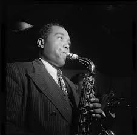

1940's - Charlie Parker
Our musician for the 1940s is Charlie Parker!
Charlie Parker was an alto saxophonist and leading innovator of the bebop style of jazz in the 1940s.
Bebop was revolutionary for its time - it was characterized by fast tempos, frequent key changes, and a new harmonic complexity that no one had ever seen before (or heard before). Before bebop, jazz was fun and simple, played to a danceable beat so that the average person could listen and enjoy dancing to the music. However, bebop was the first time jazz became an abstract, intellectual art form.
As one of the principal architects of the bebop language, Charlie Parker influenced many, many jazz musicians that came after him. Much of his vocabulary became integrated into jazz music beyond the 1940s - concepts like the tritone substitution and altered dominant chords.
Audio
-
"Ko-Ko" by Charlie Parker, 1945
-
"Donna Lee" by Charlie Parker, 1947
-
"A Night in Tunisia" by Charlie Parker, 1946